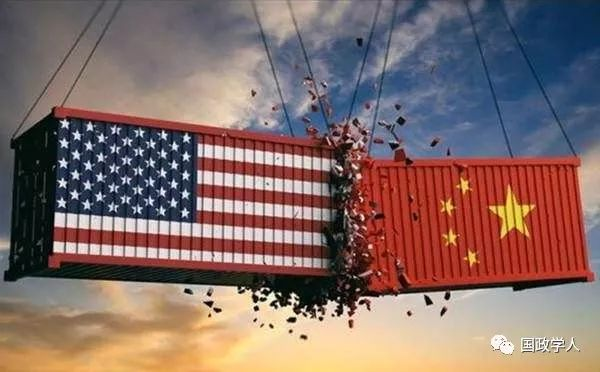

收录于合集

简 介
【作者】 张一飞，中国社会科学院美国研究所助理研究员
**【 编辑】**国政学人微信平台编辑首发
【来源】 《国际经济评论》2019年第2期
内容提要
尽管学界与媒体早已广泛使用“压舱石”一词来描述中美经济关系，但是对于国际关系中“压舱石”的概念界定、演变动力，以及未来发展趋势尚未进行深入探讨。本文将“压舱石”定义为“能够在危机中维持两国或多国关系整体稳定的，某一问题领域中的国家间均衡关系”，并通过回顾改革开放以来中美关系“压舱石”演变的历史进程，发现经济关系作为中美关系的长期性“压舱石”正在国际结构作用下面临消解；同时，恐怖主义、金融危机等非传统安全的“阶段性”压舱石也早已在问题领域的陈旧化和常态化的过程中不复存在。本文还提出了六种中美关系再次出现稳定“压舱石”的情形，并对未来中美关系做出展望。
[ 关键词]：中美关系，“压舱石”，经济关系，危机

正文
在中美相对实力差距加速缩小的宏观背景下，美国对华战略框架正在发生重大调整，其传统的“接触+遏制”框架正在加速向单纯“遏制”框架转变。[①]但是，由于中美两国在建交以来的四十年中形成了深刻的利益捆绑，美国要增加转变对华战略框架的灵活性，就必须先实现重大利益相关领域的彼此“脱钩”，这是特朗普政府发起对华贸易战的重要战略背景。2018年以前，中美两国都将两国经济关系，尤其是贸易关系视为两国关系的“压舱石”。在贸易战开始前仅一年的2017年，美国前财政部长亨利·保尔在“中国发展高层论坛”经济峰会上仍然表示，“尽管有很多不确定性，中美经济关系仍是两国关系最坚定的‘压舱石’。我认为两国都从近6000亿美元的经贸关系中获益”；[②]而对外依存度更高的中国则从2013年以来，便始终将两国经济关系定位为两国关系“压舱石”，并不断加码。[③]然而，特朗普政府发起的贸易战却旨在松动为两国关系压舱多年的经济关系，这是一种中美建交四十年来从未出现过的重大战略现象，而在美国发起对华贸易战之前，极少有人对此现象提出学理层次的预判，这说明学术界对于国际关系领域中“压舱石”的概念界定、作用原理、历史渊源、演变动力等方面的系统性关注存在一定的不足。基于上述背景，本文试图从战略角度回答以下问题：什么是国际关系中的“压舱石”？中美关系的“压舱石”在历史上如何演变？其演变动力为何？未来中美关系中是否还会出现新的“压舱石”？
**1
**
“压舱石”概念的模糊指向与评述
尽管学术界和媒体经常使用“压舱石”一词来类比某种对两国或多国关系具有稳定作用的客观存在，但却并没有对“压舱石”的概念边界和作用原理做出详细说明。目前国际关系学界和政策界对于“压舱石”只有四个模糊的概念指向：
第一，“压舱石”是一个或多个问题领域中的国家间关系。 比如，至少在2018年之前，中美两国都认可经济关系为两国整体关系的“压舱石”。在古典结盟理论中，安全领域存在的共同强敌会促使两国或多国形成安全上的相互依赖，乃至相互依存的关系，比如中国历史上的合纵联盟、吴蜀联盟，西方历史上的反拿破仑联盟、一战前的三国同盟、三国协约等。这种互助性的安全关系也经常被视为维持两国或多国关系稳定的客观存在。
第二，“压舱石”是两国或多国的明确共识。 如果只有一国认为某种问题领域中和他国的关系可以维持本国与他国整体关系的稳定，而其他一国或多国并不如此认知，则不能认为这一“压舱石”真实存在。比如，之所以有学者对目前中美经济关系的“压舱石”地位表示担忧，[④]也正是因为美国的行动说明其单方面不再认可中美经济关系的这一地位。事实上，正是在经济关系“压舱石”地位动摇之后，美国开始对华释放中美建交以来最为强烈的“全面战”信号。副总统迈克·彭斯在其演讲中批判了中国几乎所有的内政外交政策，甚至直接声称“中国的扩张性（在本周）暴露无遗”，“中国一直在试图干扰我们即将到来的2018年中期选举”，[⑤]这充分说明美国已经从心理上做好了搬开“压舱石”的准备。要确定某一问题领域的“压舱石”地位需要双方或多方共识，而要降低或改变其地位，却只需要其中一方否认即可。可见“压舱石”是一种主体间概念，非一厢情愿可以支撑。
第三，“压舱石”的存在可以确保两国或多国整体关系的底线高于全面敌对。 从字面含义上讲，“压舱石”是为了防止空船在航行中翻船而放置于船舱，保证船的重心低于水面的稳定器。依据类比逻辑，一旦两国或多国关系因某种结构性或内生性原因而对彼此的身份建构发生质变，无限趋近于全面敌对，则彼此之间的敌对意向有极大可能诱导两国在某一领域产生剧烈冲突，进而破坏整体稳定大局，使两国关系的船体在“风浪”中“翻船”。[⑥]换言之，“压舱石”的作用方式不是解决一件件具体危机，而是在具体危机发生时，使两国关系不因敌对因素的冲击而开启危险的身份建构进程。
第四，“压舱石”维持整体关系稳定的方式是保持两国或多国在问题领域中同时实现客观态势和主观认知的双重均衡。 比如，如果两国或多国关系的“压舱石”是在共同安全威胁下形成的互助关系，那么除了客观上结盟合作、维持均势的安全均衡之外，这些国家必须认可公共敌人对所有国家的威胁程度几乎相当，如果至少有一方认为公共敌人对本国威胁压力过重或过轻，则有可能单方面采取打破均衡局面之举，或自相吞并，或投靠强敌。再比如，如果两国或多国关系的“压舱石”是共同经济利益吸引下形成的互利关系，那么除了客观上形成分工合作、互利共赢的利益均衡之外，这些国家必须全都认可双方从稳定互利关系中的经济或社会收益大体相当，如果有至少有一方对本国绝对或相对收益不满，则互利关系将不足以维持稳定局面。
因此，综合不同的概念指向， 国际关系中的“压舱石”可以被定义为 “ 能够在危机中维持两国或多国关系整体稳定的，某一问题领域中的国家间均衡关系 ”。其内涵是某一问题领域中的国家间关系，其外延是两国或多国的整体关系。这里需要强调两点：一是“压舱石”的可移除性问题。问题领域内两国关系的客观态势往往无法实现量化，达到绝对均衡，因此才会出现主观认知差异的问题。“压舱石”本身暗含了理性人假设，却又易被国际关系中的错误知觉所影响。在主观认知的变量干扰下，客观态势的均衡程度和“压舱石”本身的稳定程度没有必然的线性对称关系；反之亦然，客观情况的变化也会干扰平衡的主观认知。如前文所述，当“压舱石”关系中一方掣肘，“压舱石”即不复存在。因此，国际关系中不存在永恒的“压舱石”，国家在易于维持理性的问题领域有可能更为持久地维持与他国的“压舱石”关系。二是不同“压舱石”之间的独立性问题。国家间关系中可能存在不止一块“压舱石”，即两国或多国可能在很多问题领域都存在对整体关系起到稳定作用的均衡关系。本文主要探讨“压舱石”对整体关系的作用，假设不同“压舱石”之间的关系相互独立。至于不同“压舱石”之间的相互作用关系，则不在本文研究范围内。
基于上述“压舱石”定义，本文将“从普遍到特殊”，对中国改革开放以来的中美关系“压舱石”的演变进程进行观察，进而分析其“压舱石”演变的内在动力因素，并对未来中美关系“压舱石”的走向作出相关预判。
**2
**
改革开放以来中美关系“压舱石”的演变轨迹
对中美关系“压舱石”演变轨迹的观察主要集中在三个方面： 第一，两国关系中是否存在长期稳定的“压舱石”；第二，除长期“压舱石”之外，是否存在某些阶段性“压舱石”；第三，要证明某一问题领域中两国关系的“压舱石”地位，则必须在危机发生时，观察两国维持理性的依据是否主要集中在“压舱石”所在领域的两国关系。 因此，在中美关系不同的历史阶段中，首先要根据问题领域的重要性和利益捆绑的深度或趋势，提出关于“压舱石”的假设，其次要根据危机时刻两国的反应验证假设，最后要从被验证的“压舱石”假设中对长期存在和阶段性存在的“压舱石”进行分类，绘制中美关系“压舱石”的光谱全貌。
根据中美关系的友好程度和国际社会的明显标识，可以将改革开放以来的中美关系分为四个时期：
（一） 卡特、里根时期（1977~1989）
假设 1：经济关系、安全关系为本阶段中美关系“压舱石”
卡特时期是中美关系进入全新阶段的起点，经过尼克松时期的破冰阶段，中美两国经过七年的曲折谈判，最终建立了正式外交关系。在1979年1月邓小平访美前后，中美两国的经济和安全关系都发生了质变。尤其“在访问期间，邓小平及其访问团成员与美国政府进行了广泛的会谈，并在平等、互利和互惠的基础上签订了一系列协定，囊括农业、能源、文化、空间、卫生、环境、科学、攻城等领域及其管理、教育和人员交流等方面”。[⑦]邓小平还把科学技术交流提高到了战略层面，希望引进美国的先进技术推动国内生产力发展。[⑧]同时，在卡特总统的坚持下，美国国会于1980年批准给与对外开放的中国最惠国待遇。[⑨]经济关系的密切发展也使中美两国在教育、科技等领域开始以空前的效率加速融合，同时受益。[⑩]
与此同时，随着苏联同时向中美出击，在中美关系实现正常化之后，“双方进而形成一种松散的同盟关系”。[11]这是苏联让中美两国在主观认知方面都感受到了“结盟”必要性的客观结果，中美两国在安全关系上实现了安全感的压力均衡。邓小平希望美国更多地承担起限制苏联扩张的责任，并主动承担起教训越南的任务；而卡特总统也希望能够孤立苏联和越南，中美在安全问题上达成了很高的默契。[12]
在中美两国于经济和安全问题领域内实现均衡之后，两国整体关系的脆弱性大大减弱，以至于台湾问题再次浮出水面之后，两国决策层都不得不考虑“新的大局”。卡特时期整体中美关系危机主要集中在台湾问题：一是中美建交的第二年，美国便开始准备向台湾出售包括FX系列战斗机在内的先进武器。二是美国大选过程中，竞选人里根连续发表对中美关系不负责任的言论，比如继续称台湾为“中华民国”等，并攻击卡特的对华友好政策。中国方面对此做出了强硬反馈，甚至不惜将两国关系从大使级将为代办级。[13]中美关系在这种背景下进入了里根时代。
事实证明，两国决策层都不愿放弃业已开启的经济和安全关系，台湾问题没有对整体中美关系大局形成实质性冲击。里根在赢得总统大选之后，在黑格的启发和坚持下，很快领悟美国的战略利益不在台湾，而在中国大陆，把个人感情带入国家战略极不理智。为了维护中美“压舱石”的稳定，在经济方面，美国国家安全委员会同意把中国的贸易地位改为“友好的非盟国”，以便“向中国转让某些先进技术，包括军民两用技术，并允许中国通过商业途径向美国购买防御性武器”，[14]这说明美国在中美关系面临挑战之际寻求主动扩大中美贸易边界。在安全方面，里根继续将苏联作为美国军事战略的主要对象，尽管他在执政之初没有完全认识到中国对于遏制苏联的战略作用，但是也很快恢复了战略清醒，尤其是“里根主义”形成之后，“里根政府积极倡导主动进取地与苏联争夺第三世界的主导权”。[15]美国开始多次主动澄清美台关系的性质，并在对台军售问题上做出了一些非实质性让步。中国方面也做出了类似考量，尽管中国领导人开始对中苏关系进行反思，但是至少在《八一七》公报发布之前，中国整体对外战略仍然继续保持在“联美反苏”的轨道上。[16]中美双方在共同的利益考量下做出了各自妥协，至1982年，中美发布《八一七公报》，美国宣布不追求“两个中国政策”，且并不追求一个长期的对台军售计划，双方同时还强调要加强经济、文化、教育、科技和其他方面的联系，维护世界和平，反对侵略扩张。[17]显而易见，《八一七》公报的内容完全证明了这一阶段中美关系的“压舱石”牢牢锁定在经济与安全关系，双方在台湾问题上相互妥协的根本依据是两国经济发展与安全压力的均衡关系。
（二） 老布什、克林顿时期（1989~2001）
假设 2：安全关系的“压舱石”作用消失，经济关系的“压舱石”作用上升
从里根执政后期开始，苏联逐渐式微，中苏关系与美苏关系都出现了不同程度的缓和，即两国的安全压力不仅同时减小，而且不再均衡，中美两国的安全关系不再符合“压舱石”定义。值东欧剧变、北京风波、苏联解体之际，“美国行政当局已经不能够以安全利益为由来主导对华政策的制定”。[18]因此，在老布什总统执政之初，中美关系因双“压舱石”结构突然崩塌，而单“压舱石”结构尚未被适应，出现了严重倒退，危机考验再次到来。
北京政治风波之后，美国国会反华情绪达到历史最高点，甚至有极右派国会议员要求与中国断绝外交关系。老布什总统试图将对中国的制裁仅仅限制在军事和社会交流范围内，但国会则坚持要把政治制裁和军事制裁推广至经济制裁，许多对华投资和贷款都被中止。[19]但是，“经济关系”压舱石的作用很快得以体现，无论美国国会如何强硬，都改变不了美国已经成为中国第三大贸易伙伴的事实。[20]在激动情绪过后，美国国会理智渐复，尤其是“参议院的法案稍微缓和，并赋予总统更大的自由权，总统可以根据自己对于国家利益的评估决定取消制裁”。[21]到了90年代初，老布什总统与邓小平出于经济考虑开始为双边关系的缓和做出各自的努力，尤其是老布什总统坚决和国会斗争，为中国争取最惠国待遇，中国则根据美国内政和中国实际的走向，在不失原则前提下，最大限度地配合老布什总统恢复两国经济关系。[22]这也从侧面证明了经济关系仍是双方最高决策层关注的核心议题。
另一个考验仍然是美国对台军售问题。其实这对美国而言仍然是经济问题：由于苏联解体，美国国内削减国防开支，迫使国内军火商向外寻找市场，而台湾的经济发展使其成为最佳军售对象之一。[23]因此，90年代初，美国决定向台湾当局出售F-16战斗机，但这对中美关系而言无疑是严峻考验。而老布什总统看准了经济关系的“压舱石”作用，在对台出售先进武器的同时，积极解除对中国的经济和技术制裁，恢复中美商业与贸易联合委员会的活动，取消四项对华军售禁令。[24]尽管这些做法完全不足以挽回美国违背《八一七公报》的国际声誉，也不足以使中国放弃在台湾问题上的原则，但却足以说明中美经济关系的作用在美国决策者心中的地位。中国则因势利导，在坚决维护国家主权的前提下，坚持改革开放，并在1992年开始推行市场经济，“努力遏制中美关系的大幅下滑”。[25]
克林顿时期是中美关系又一个重要关口，在此阶段中，美两国已经基本适应后冷战时期的单“压舱石”状态，中美关系的数次重大危机都在经济关系的稳定作用下平稳度过。最先对中美关系进行考验的是美国提出的人权问题，克林顿在执政之初坚持把对华最惠国待遇同人权挂钩，而最终又不得不在美国在华经济受到严重损害的情况下，取消给最惠国待遇附加条件以及年度审议制度。[26]中国在实行市场经济体制后，更是主张经济问题和其他问题脱钩，以为中美贸易关系发展打开通道。中美经济关系的重要性得以体现。
1995~96年的台海危机是对中美关系的又一次考验。克林顿政府试图试探中国在美台关系上的底线，接待台独份子，向台海地区派遣航母编队，但是在中国显示出并未懈怠的军事准备与维护国家主权的坚定决心之后，美国迅速放弃试探，[27]并提出具有强烈经济暗示的“对华政策三原则”，包括维持中国的安定和开放，支持中国融入国际社会，以及寻求对华对话和接触。[28]江泽民主席和克林顿总统随后也一致表示：“两国合作的基础不是削弱了，而是加强了”，[29]并共同签署《中美联合宣言》，这是中美建设战略伙伴关系的起点。此后，克林顿总统做出“不支持台独，不支持一中一台、两个中国，不支持台湾加入任何必须由主权国家才能加入的国际组织”的“三不”承诺。[30]
1999年5月的“炸馆事件”是冷战结束后中美最严重的一次外交危机。美国轰炸中国驻南斯拉夫联盟大使馆，激怒了中国与国际社会，中国要求美方道歉和赔偿，而美国在两轮谈判之后，同意再次道歉，并向中国政府支付450万美元赔偿金。至当年“9月11日，江泽民主席和克林顿总统在新西兰出席亚太经合组织第七次领导人非正式会议期间举行会晤，双方就恢复和发展两国‘面向21世纪的建设性关系’达成新的一致意见”。[31]
贯穿整个90年代，中美经济关系的迅猛发展是一切危机管理最重要的宏观背景，中美之间捐弃冲突，建立全面建设性关系、战略伙伴关系的首要目的，是维护双边经济发展大局。自1990年至2000年，中美双边贸易额从200.3亿美元增长到1164亿美元（美方统计），美国在华投资从4.3亿美元增长到43亿美元（1999年），中美还达成了中国加入世贸组织的双边协议。[32]可以说，这一阶段中，中美同时发生的人文、军事、高层政治等其他领域的交往都在为经济交往服务。
（三） 小布什、奥巴马时期（2001~2017）
假设 3：中美关系从单“压舱石”结构再次回归双“压舱石”结构
随着美国世界霸主地位的不断巩固和中国综合国力的全球性崛起，越来越多的“美国问题”波及到中国乃至全球，给中美两国带来新的挑战，但也同时为中美双方创造新的合作机遇，甚至形成新的阶段性“压舱石”创造了有利条件。
二十一世纪初，中美关系单“压舱石”结构的弊端开始显现，即经济关系发生向其他领域的功能外溢出现障碍。中美两国社会文化、经济模式和政府体制的巨大差异决定了中美之间很难像欧洲大陆国家之间那样，从经济合作迅速衍生出政治新质，经济关系作为“压舱石”只能确保两国关系的“底线”，而无法延展出“上线”。小布什总统执政之初，中美便出现了南海撞机事件，尽管美方进行了道歉，中国归还了飞机，[33]但是两国的敌对意向在没有突破经济关系底线的情况下明显上升。
就在中美在经济关系“压舱石”作用下寻求重启友好关系之际，“9·11”事件爆发，美国乃至全世界主要国家的国家安全观都因此发生了重要变化。“美国决策者意识到，非传统威胁是对美国国家安全的真正的、迫在眉睫的威胁，布什宣布美国处于战争之中。反恐被列为美国的第一要务，客观上为中美关系的发展提供了契机”。[34]而中国“作为一个具有独立自主外交传统、自身存在民族分裂和恐怖活动隐忧的国家，在立即对美表示政治支持外，还采取关闭中阿边界、提供情报分享等具体措施予以实际支持”。[35]问题的关键不是恐怖主义是否对中美在客观上形成了等量齐观的威胁，而是中美两国在主观上都感受到了均衡的非传统安全威胁压力，且都认可国际安全进入了新的时期。因此，以恐怖主义为代表的非传统安全威胁才会具备成为“压舱石”的资质。中美关系也由此回归双“压舱石”结构。
同时，小布什总统执政期间是中美经贸关系加速深度融合的时期。尤其是2001年底中国加入WTO之后，中美双边贸易迅猛增长并带动太平洋两岸就业增加。“2001年两国贸易额美方统计是1215亿美元，中方统计是804亿美元；2007年这个数字已经跃升为3215亿美元和3020亿美元。中美两国互为第二大贸易伙伴，中国连续五年是美国出口增长最快的市场”。[36]从“压舱石”的角度看，“经济上的相互依赖关系使和平共处成为这两个太平洋大国十分重要的共同利益”。[37]
奥巴马总统上台之后，中美关系阶段性“压舱石”的具体内容在非传统安全领域发生了平移。由于阿富汗战争、伊拉克战争严重消耗了美国的经济力量，奥巴马试图将反恐战争放至国家战略的次要位置，尤其是奥巴马的竞选宣言“正式表明，十年反恐战争作为美国战略的一页被正式地翻过去了，全球反恐战争正式结束”。[38]而中国方面，恐怖主义逐渐内政化、区域化，日渐处于国际反恐合作的外围。[39]恐怖主义问题不再成为双方关注的重大问题领域，其“压舱石”地位也随着国际形势的变化而昙花一现。但是，几乎与此同时，金融危机带来的全球效应使中美立刻迎来了新的共同挑战，“进入2008年，危机持续扩大，并逐渐影响到实体经济以及向全球蔓延，演变成为全球性的经济危机，中国经济也未能幸免”，[40]非传统安全威胁的接力棒从“恐怖分子”之手传到了“金融动荡”之手。而此时“中国正处在完善市场经济的过程中，有许多改革需要实施，加强知识产权的保护，规范市场，改革金融系统，使人民币向着浮动汇率发展，这些是中国经济发展本身的需要”，[41]其中也与美国的战略期许和即时需求有许多重合之处。
中美共同应对全球性经济危机的需求在一定程度上抑制了美国制衡中国发展的行动。尽管奥巴马上台之初便提出“亚太再平衡”战略，但正如希拉里·克林顿所言，“奥巴马总统和我都认为，必须基于原则与现实的结合，而不是僵硬的意识形态；必须基于事实和证据，而不是情绪或偏见”。整体而言，奥巴马执行的是务实外交，对于中美之间的共同利益认知较为深刻，承认相互依赖，并在一定程度上欢迎中国崛起。[42]即使2010年中国超过日本成为世界第二大经济体，亚太再平衡战略也仅仅停留在外围军事活动与官方话语体系。美国在东亚的战略目标是与该地区从政治和经济上深度绑定，并推动该地区的开放与合作，[43]这也和中国的经济发展目标有一定的重合。可以说，奥巴马执政期间，中美关系的两块“压舱石”出现了合流之势，经济关系压舱石逐渐覆盖非传统安全压舱石。同时，“奥巴马政府在一系列敏感问题上避免采取刺激中国、影响中美关系的策略”。[44]
（四） 特朗普时期（2017至今）
假设 4：中美关系“压舱石”正在消解
自特朗普总统上台以来，美国保守主义倾向明显加深，美国对于“接触”战略的耐心逐渐消失，试图通过“脱钩”来扭转传统战略中的“接触”部分。尽管客观上中美经济关系仍然处于相对均衡和互补的状态，但是美国对于中美合作的认知出现了一定程度的偏差，特朗普认为中国的崛起是对美国的客观威胁，中美合作是美国被中国利用，却忽略了“只有美国从主观上尊重和接受中国的政治制度和国内体制，中国才会真心尊重和接受美国在世界范围的领导”。[45]这种权力性偏见导致中美两国对经济关系的获益性认知不再均衡，（覆盖了非传统安全关系的）经济关系的“压舱石”地位受到挑战。
因此，中美关系抵御危机挑战的能力呈现出持续下降趋势。美国在《国家安全报告》中将中国列为“修正主义国家”之首；[46]在自身也承受巨大损失的情况下，持续对中国的权重产品加税；构建“印太战略”；对台湾出售价值14亿美元的军备并通过台湾旅行法；[47]指责中国干预美国的中期选举。这些危险行为正在一次次抬高中美之间的敌对意向。甚至可以说，贸易战只是全面战的初始阶段和初始领域，美国选择贸易领域入手，是因为中国经济对贸易的依赖性甚强，中国对贸易问题更容易让步，以贸易打击中国更容易打击至中国的社会层面。更加令人担忧的是，对华战略框架的保守主义倾向调整是美国各阶层，尤其是精英层的共识，而并非特朗普一人的战略倾向。[48]这种导致中美经济关系在主观层面失衡的因素还在继续发酵，因此，在相当长的一段时间内，中美关系“压舱石”仍将持续消解。
综上所述，中美关系“压舱石”经历了四个阶段的演变，以经济关系为长期存在的“压舱石”，以不同主题的安全关系为阶段性存在“压舱石”。
表 1 1979~2018 年中美关系“压舱石”演变轨迹
阶段
|
阶段性“压舱石”
|
长期性“压舱石”
—|—|—
卡特-里根阶段
|
（传统）安全关系
|
经济关系
老布什-克林顿阶段
|
无
|
经济关系
小布什-奥巴马阶段
|
（非传统）安全关系
|
经济关系
特朗普阶段
|
无
|
正在消解
**3
**
中美“压舱石”的演变动力
（一）长期性“压舱石”的演变动力
在1979年至2017年近四十年中，经济关系之所以能够始终保持其中美两国关系的“压舱石”地位，主要是因为中美两国各自的内部变迁相对重合，这使得中美两国可以相对均衡地获取和认知经济收益。
从客观方面讲，中美两国经济结构在很长时期内十分互补。至少在2008年以前，“两国具有比较优势的部门均逐渐增多，中美两国都在日益加快的经济全球化进程中获得了较大的国际分工利益”，但是“中国的比较优势分布比较集中”，“美国具有比较优势的部门多于中国”。[49]“美国作为成熟的经济体和世界上最大的发达国家，技术创新、应用始终走在世界各国前列，在中、高技术产业中获得了越来越强的竞争力。中国作为发展中国家，自主创新能力还相对较弱，比较优势集中在低技术产品或高技术产品的劳动密集型环节上”。[50]从进出口总量来看，“中美贸易额从1979年的25亿美元增长到2016年的5196亿美元，38年间增长了211倍”，其中，“美国对中国的商品出口为美国创造至少67.8万个就业岗位，占全部出口创造就业的10%”，“美国服务业对话出口长期存在顺差，2016年高达500多亿美元，直接为美国创造了近30万个就业岗位”；[51]而中国也依靠引进学习和技术革新在产业和产品升级方面有着快速进步，在相当长的时间里，出口贸易都是中国经济发展的主要引擎之一。[52]中美发挥比较各自优势，带动各自国内深层次的社会变化，这远非进出口逆差或顺差比可以衡量。
从主观方面讲，中美两国世界观的变化很大程度上发生了同频重合。二战之后，美国获得冷战胜利以及冷战后得以继续主导世界的主观原因在于，美国始终不遗余力地从旧时代“帝国主义的美国”向新时代“世界主义的美国”转变。两者区别在于，“帝国主义的美国”试图按照自己改变世界，而“世界主义的美国”希望根据世界改变自己。[53]尽管“盎格鲁- 萨克逊”和新教的社会文化基因会时常诱惑美国决策者向世界推销本国的价值观念和民主制度，但整体而言，在美国主导的世界体系下，边缘国家和中心国家的界限毕竟出现了模糊化趋势：新兴经济体蓬勃发展，“金砖国家”组织化程度日益增强，拉美国家在世界舞台上扮演着越来越重要的角色，中国从一个地区性国家迅速成长为全球性国家，甚至美国的传统盟友也获得了越来越多的政治自由，并时常与美国发生龃龉。与此同时，中国更是积极从“孤立于世界的中国”向“积极融入世界的中国”转变，自1978年以来，在和平崛起的前提下，中国对内经历了制度民主化、经济自由化、政府服务化改革；[54]对外从向世界规则靠拢，逐渐开始为世界规则贡献中国智慧，其中最具代表性的是“人类命运共同体”思想，习近平将其解读为“相互尊重，平等相待的新型权力观，合作共赢、共同发展的利益观，共同、综合、合作、可持续的安全观，不同文明兼收并蓄、交流互鉴的文明观”。[55]在大部分时期，这两种世界观在形成过程中有相当多的重合阶段，这也是中美两国通常能够认知到中美经济关系处于均衡状态，进而使经济关系长期处于“压舱石”地位的主观根源。
然而，目前主客观两方面推动经济关系向更具有“压舱石”特质的方向演变的动力都在明显衰竭。 经过四十年的发展，中国已经从一个农业国转变为工业国，其产业结构正在从劳动、资源密集型产业向技术、资金密集型产业加速转型。“通过回顾改革开放40年以来中国三次产业产出结构、内部结构以及就业结构变迁的历程和特点，可以发现，中国产业结构变迁趋势符合产业结构演变的一般规律，并且已经具备了后工业化时期的特点”。[56]换言之，中国与美国由比较优势带来的产业互补性正在下降。同时，特朗普执政前后，美国的世界观正在从“世界主义的美国”向“帝国主义的美国”，至少是“保守主义的美国”倒退。 所谓的“美国第一”包括三重含义：一是美国的国家利益排序在国际价值排序之前；二是美国要开始拒绝为世界提供公共产品，已经提供的公共产品要开始回收；三是美国要积极按照美国自身的标准用强力改变世界，使世界更加符合美国的国家利益。 这种变化与中国构建人类命运共同体的当代世界主义追求格格不入，美国不仅认为中美经济关系，尤其是两国经济收益处于失衡状态，而且认为中国的“和平”与“崛起”存在天然矛盾，担心自身霸权受到挑战，不断加深对中美关系的敌对性建构。因此，由于正向演变动力不足，中美关系的长期性“压舱石”正处于消解进程之中。
（二）阶段性“压舱石”的演变动力
如果说“长期性”压舱石的加固和消解主要由于中美两国自身的主客观变化，则“阶段性”压舱石的出现和消解通常源于外部条件变化，或者中美两国外溢的全球性影响反向对两国本身形成倒逼和建构。
通过观察历史可以发现，阶段性“压舱石”的出现大体与三种外部恐惧相关：
第一， 国际结构发生变化引发的恐惧。 国际结构的作用是一种大于意识形态作用的客观存在，“国家首要关注的不是权力最大化，而是维持自身在系统中的地位。如果可以自由选择的话，国家将涌向较弱的一方，因为威胁它们安全的是较强的一方”。[57]这种结构不仅包括客观结构，也包括由进攻意图大小构成的主观结构。在1969年“珍宝岛”战役之前，中国在名义上仍然执行“一边倒”，而到了70年代初，随着苏联进攻性日益加强，“中美苏战略大三角”才正式形成。这是两极格局中的一种新变化，虽然客观的权力格局没有改变，但是，由于苏联进攻意图增强，而进攻意图也会激发国家的制衡行为，[58]中美两国才会在主观国际结构的变化下形成松散联盟。
第二， 国际安全中新生事物造成的恐惧。 人类对于未知事物的恐惧往往使眼前的危险相形见绌。尤其是在某种造成巨大破坏力的新生事物初生之际，是恐惧的顶点。[59]中美两国在21世纪初始具有一定的对抗情绪，但是在情绪缓解的过程中（中国加入WTO前夜，美国对华战略尚未出现重大调整），出现了震惊世界的“9·11”事件，这直接导致美国的战略理性情绪化，以及中国道义化战略传统被激发。事实证明，尽管恐怖主义作为一种相对发展且突出的非传统安全威胁给世界造成了巨大的政策影响，但是其实力与能力仍然完全不足以与主权国家相对抗，它对美国和世界心理层面的伤害远胜于物理层面的伤害。
第三， 全球化建构的恐惧。 美国作为具有全球性影响力的超级大国，其国内现象通常具有外溢效应；而中国的快速崛起使中国对于这种外溢效应尤其敏感，并很容易从这种外溢效应的受动者变成施动者。全球化不仅可以使技术便利和贸易红利迅速扩大，也容易使大国危机和恐慌心理迅速扩散。随着越来越多的国家在全球化作用下卷入这种受动者和施动者之间的身份摆荡，全球性合作应运而生，而这种合作势必由大国领衔。金融危机就是这种“先由内而外，再由外而内”的建构结果的典型代表。
而阶段性“压舱石”的消解也正是由于三种外部恐惧的消失或者稀释：
第一， 国际结构向着有利于中美某一方的方向倾斜。 苏联的解体的原因是另一个研究问题，不在本文讨论范围之内，但是其解体的客观结果却是国际结构出现了“一超多强”的局面，美国的结构压力几乎在一瞬间反弹为结构优势。美国在主客观两方面都失去了和中国合作的基础。进攻性现实主义取代防御性现实主义成为美国对外战略的主流，这种情绪反弹带来的政策影响一直持续到奥巴马执政中期，美国才意识到自己已经几乎触碰到进攻能力的天花板。中国方面则继续保持其韬光养晦的一贯风格，在美国耗散其实力的过程中不断积蓄实力，这种双方主观世界的动静状态也是导致中美实力差距相对缩小的原因之一。但是，中短期内，中国的综合国力与美国尚有巨大差距。
第二， 国际安全中的新生事物明晰化。 源自未知的恐惧只能通过对未知的明确来解除。随着关于恐怖主义的想象力被不断证明和证伪，恐怖主义威胁行动力的底线和上线逐渐被主要大国探明，各国的反恐机制运转有力，反恐工作节节胜利。尽管恐怖主义威胁在客观层面仍然猖獗，并出现了一些新的变化，但是就主观压力而言，已经远不如2001年之后的几年里那般强大。即使如“ISIS”这样更为强大的恐怖组织出现，也再未引起过中美两国对外战略的重大变化，且被国际社会迅速合力重创。[60]恐怖主义“压舱石”地位的消散不是因为中美双方感到的压力不再均衡，而是这一问题领域的重要性不再能够达到一定的程度。
第三， 全球性恐慌常态化。 人类在19世纪到20世纪经历过多次金融危机，因此，2008年金融危机并不是某种新生事物。虽然这次金融危机给整体世界经济发展蒙上了巨大阴影，但是人们也对于金融危机的产生原理和作用方式更加习以为常，各国政府深知在不改变目前主要国家的经济发展模式和政治制度构成，尤其是资本主义基本社会矛盾的前提下，经济危机必然周期性出现且在全球化作用下被越来越快地扩大，[61]这种对经济危机规律的认知也是造成当今世界大部分国家都有回归保守主义倾向的一个重要原因。当某种问题领域中的压力出现常态化趋势，即对中美两国的均衡压力会长久持续，且基本无望解除或倾斜，在两国对于该压力所产生的破坏力有足够心理预期和预备手段的情况下，该问题领域的重要性也会下降。
**4
**
关于未来中美关系“压舱石”的评估
结合中美关系“压舱石”的演变历史和演变动力，对于其未来的存在与变化，可以从其总体特征、演变趋势以及逆向演变的条件等方面加以评估。
（一） 中美关系“压舱石”的总体特征
首先，中美关系“压舱石”的演变进程从中国主导逐渐变为美国主导。 2000年以前，长期“压舱石”出现于中国改革开放，尤其是对美开放之际；传统安全“压舱石”出现于中国脱离苏联阵营，开启“中美苏战略大三角”之际，美国主要扮演反应角色。但是，进入二十一世纪之后，非传统安全“阶段性”压舱石的出现通常取决于美国国内问题的兴起，虽然中国在被卷入之后可以立刻调动积极态度，但是议题的发生毕竟源于美国；而“阶段性”压舱石的消散也通常是由于美国解决或适应了问题，尤其是美国主观认知发生了变化之后，甚至会出现客观情况变化甚微，而该问题领域重要性自然下降的情况。
其次，国际结构的变化是“压舱石”最重要的演变动力。 从客观方面讲，由国际结构变化所形成或消除的“压舱石”持续时间远比其他原因所形成或消除的“压舱石”存在时间更长，影响更为深刻，内政辐射效应更为明显；从主观方面讲，由国际结构变化所形成或消除的“压舱石”影响更多的人群，其强大建构力具有基础性、普遍性作用，而在信息量越来越大，世俗生活变化越来越快的现实中，由新生事物或新生现象所形成的“压舱石”注定具有越来越低的冲击力，人们对于“新奇感”的脱敏会使后者越来越不易形成均衡压力。
最后，旧的“压舱石”正在消解而新的“压舱石”尚未出现。 虽然现在讲中美经济关系这一长期性“压舱石”已经消解言之尚早，但是这种建构进程已经开始。从历史经验来看，“没有压舱石”本身并不是两国关系的灾难，但是“压舱石”的作用类似于人体免疫系统，它可以使病毒出现时不至于对人体造伤害，至少不会造成致命伤。如果长期性“压舱石”彻底消解，中美在未来冲突或危机中避免全面对抗风险的能力将急剧下滑。
（二） 中美关系“0压舱石”状态的演变趋势
从“压舱石”的演变动力来看，作用最大的国际结构的变化正在朝着不利于“压舱石”存在的方向演变。在中美两国缺少共有、均衡安全压力的情况下，美国主动把中国视为安全压力的来源，而中国继续奉行“无假想敌”外交，这将不可避免地加剧两国安全压力的对立性和非均衡性。同时，中国经济能力开始逐渐凸显，中美合作中的相对收益差开始比绝对收益值更加引人注目，美国心理进一步失衡，经济关系的对立性和非均衡性也开始出现。在战略对立背景下，两个问题领域的推拉合力不仅在动摇经济关系这一旧“压舱石”，也在增加新“压舱石”出现的难度。
深究美国对华开启恶意建构的心理根源，在于美国的对外战略通常以“敌人”存在为基础。“有敌人存在”是其开展对外关系的一种心理习惯，西方文明的“二元对立”政治哲学传统通常认为“要有别人，人们才能给自己界定身份”，“只要能在心理上跟另一批人为敌，我们自己就会加强凝聚力，从敌我对比之中得到满足”。 **** ** [62]** 同时，中国崛起的客观现实又加剧了这种心理，但中国不可能为了避免使自身成为美国战略图谱中的明显标识，便牺牲崛起速度或者推诿承担国际责任。中国一再表明自身没有颠覆现行国际秩序的意愿，但是“大国政治的悲剧”正是国家之间无法分辨对方的真实意图，而国家又往往只相信其愿意相信的事实。在美国进一步寻找敌人的需求上升和中国持续和平崛起的主客观背景下，中美之间的对立性和非均衡性势必呈现出加剧趋势，可以形成“压舱石”的土壤日渐稀薄。
但是，长期性“压舱石”仍然处于演变过程之中，虽渐消解，却未消亡。尽管国际结构、美国战略文化等深刻要素似乎不利于长期性“压舱石”的连续性存在，但这也许正揭示了长期性“压舱石”围绕经济关系非连续性点状绵延的存在形式——其“长期性”未必表现为友好关系的“连续性”而是表现为经济主题的“延续性”。如前文所述，“压舱石”的演变动力兼具客观和主观成分，甚至主观成分（如世界观和恐惧感的变化等）更为重要。而在主观成分中，除了长期稳定存在的文化性根源之外，还有即时性的利益思维。主观成分因后者而产生的易变性决定了“压舱石”演变的可逆性，而这恰恰为某些利益因素发挥巨大作用留下了充足的空间。尽管目前美国以政治逻辑取代了市场逻辑，或者以主观意愿主导着客观需求，但是其客观需求也必然会进一步反作用于主观意愿。虽然某些深层次原因决定了美国绝不可能放任中国零阻力崛起，但是某些长期存在的现实经济利益也决定了美国不得不非连续地在经济利益方面与和平崛起的中国妥协，在一些阶段重新评估经济关系作为“压舱石”的作用。
同时，即使在美国目前所追求的“纯遏制”战略框架内，也存在错误知觉的消极干扰，而错误知觉在实践中则有可能被部分或全部纠正。比如，在发动对华贸易战的决策中，美国决策者对中国和本国都出现了“统一性知觉”，即将一个国家的行为视为集中统一、事先谋划、协调一致的。[63]但事实上，国际关系是多元利益认知互动的结果，除非“在双方之间存在完全的共同利益，即使在寻求和达到共同利益的过程中也没有出现任何分歧；或者两者之间存在完全的冲突，即使发动两败俱伤式的战争也没有丝毫共同利益可言”，[64]绝不会有一个大国可以就某一国际问题在国内实现绝对意义上的观点和力量的统一。许多美国官员和学者将中国视为铁板一块，甚至有人认为在中国国内自上而下存在一个“百年马拉松”式的称霸规划，[65]这既忽视了中国多元社会力量格局的实质性变化，也忽视了中国政治多元一体的真实国情。事实上，如中国一般的巨型体量大国所面临的内部结构异常复杂，新生问题层出不穷，利益分配动态起伏，中国自古以来便不是单凭强大的中央政府权威就可以得到良性治理的政治实体，社会的利益关注和辅助作用从来不容忽视，遑论将一种不符合中国人民价值观和战略利益的错误战略坚持百年之久。与此同理，美国决策层也高估了本国的“统一性”。事实上，作为体量更大且社会力量更加分散的美国，更不可能在一个导致社会利益长期流失的战略方向上稳定连续地凝聚力量。即使其政治逻辑被国内部分精英接受，也很难获得公众的长时间积极配合。在中美利益交融至深，美国“伤敌一千，自损八百”的背景下，其可预期的错误知觉的纠正也将有利于缓和或纠正美国目前的对华战略，进而重塑长期性“压舱石”。
这里需要强调两点： 第一，非连续性的经济合作关系不可被视为阶段性“压舱石” 。后者的阶段性体现在合作主题的更迭，前者的非连续性体现在合作程度的起伏，而问题领域稳定如一，两者具有本质差别。 第二，如果美国发现贸易战等行为对本国造成的伤害超出了原先预期的阈值，则有可能重新调整对华战略，但中国必须对这种调整的性质具有清醒的认识，其“不得已”心理多于“真合作”意愿，仍然不能沉浸在自由主义的迷梦中，而要随时做好应对“ 0 压舱石”状况出现的准备。
（三） 新“压舱石”出现的可能性
尽管旧的“压舱石”已经随着国际结构的演变而出现了消解趋势，但是如果把研究视野放宽，则会发现，在下列几种情形中，中美关系仍有可能出现新的阶段性，甚至长期性“压舱石”。
情形 1：不受人类控制的智能科技威胁出现。
智能科技一旦产生自觉性，不再受人类控制，中美作为该领域的领衔国家必将再次感受到均衡的安全压力，搁置传统积怨，联合解决新的安全威胁。尽管人工智能知识界普遍认为智能机器离具备人脑的功能还差很远，[66]但是它们要对人类形成安全威胁却未必需要人脑的全部功能，而只需要独立意识。同时，从人类的科技发展史来看，从有人类到出现文明用了300万年，从农业社会到工业社会用了3000年，从工业社会到电子社会用了300年，而从电子社会到信息社会只用了30年，科技的非线性发展速率说明，我们无法确保智能机器不会在很短的时间内在意识上产生独立性，并对人类整体构成威胁。
情形 2：中美两国至少有一国发生重大的内部变革。
大国发生的内部变革有两种情况：第一种情况是主动改革。所有理性的改革都需要稳定的外部环境，这将为主动妥协创造动机（哪怕是策略性的）；如果主动改革方向与对方需求同步，将更加缓和两国关系。第二种情况是内部危机。决策者必须对战略排序进行考量，在没有爆发外部热战的情况下，中央政府一般会先解决内部问题，这也会为外部妥协创造动机。妥协可能会降低主观认知的非均衡性或者客观现实的对立性，这都有助于两国在某些问题领域中出现新的交融关系。
情形 3：全球性身份建构被重新激发。
尽管逆全球化成为过去几年的普遍趋势，但这只能说明全球化出现了阻力，而非死亡。在哪些契机和条件下全球化将被再度激发是另一个研究问题，不在本文研究范围内，但是如果全球化在曲折中被再度重启，并开始重新建构每个国家的全球性身份，中美也必将被卷入这一大潮，并作出政策反应，这将对于两国经济关系的修复有所裨益。
情形 4：某些常规思维无法探知的重大变故。
此类情况发生的概率几乎为零，但是一旦发生，则必将对现有国际关系的理论和伦理产生颠覆性改变，中美的一体化身份建构可能在极短的时间内完成。此类情况包括：外星人或海底未知生物入侵，重大考古发现对人类现有身份格局进行颠覆，自然环境出现断崖式恶化，出现天才政治或学术人物用某种不可思议的方法执行了某种天才设计等。
情形 5：出现巨大增量利益诱惑。
人类科技的发展呈现出非线性特征（从采集文明发展至农业文明耗时30000年，从农业文明发展至工业文明耗时3000年，从工业文明发展至信息文明耗时300年），每次科技革命的节点都会使新的利益增量空间呈指数级增长。因此，如果新的科技革命节点在更短的时间内（比如30年）到来，上一个科技阶段内的利益存量与新的利益增量相比将显得微不足道，中美两个理性大国都不会使数字级利益成为指数级利益的机会成本。即使没有出现紧密合作，两国也必将有限的国家动员能力用于探索和开放新的利益空间，如果在此过程中出现技术难题，全球合作将成为唯一理性选项。
情形 6：中美战略目标边界磨合成功
大国战略目标的理性化过程通常伴随着剧烈的国际冲突，但只要危机管理得当，大国在避免同归于尽的前提下，通常会在冲突和危机中日益明确本国战略目标的合理化边界。比如，中国西汉时期汉朝和匈奴正是在一次次战争中对本国战略目标边界进行了合理化修正（匈奴将战略目标由“侵入长安”修正为“安居漠北”，汉朝将战略目标由“全歼匈奴”修正为“稳定西域”[67]），使双方冲突烈度与频率逐渐降低，以至于和平共处。“实际上，双方选手在收益相同而非利益冲突的条件下，将主动协调二者的立场和条件，从而在类似的博弈游戏中取胜。关键在于他们能否在游戏中一起找到某种符号或暗示或理性化条件，并且自愿接受这些因素的约束和制约，即使这些条件对其中的一方并不是十分有利”。[68]而冲突和危机不失为在价值观、利益和习惯等方面创造符号经验的过程。事实上，中国提出的“中华民族伟大复兴”、“人类命运共同体”等概念的现实边界无法在没有美国参与的情况下得以明确；同样，美国的全球霸权边界也不可能在没有中国参与的情况下完全按照其本国意愿无限拓展，中美必须在互动中进一步了解本国战略目标的合理性边界。从这个角度讲，中美贸易战或者其他形式的冲突只要被限定在中美两国危机管理水平的范围以内，其长期性战略益处应该被认可——磨合意味着风险，也同样意味着机遇。
**2
**
结语
“在新情况发生时回归历史”是人类与生俱来的本能。在有可能到来的“0压舱石”时代，美国很有可能发自本能地回顾上一个中美关系没有“压舱石”的时代，即上世纪五六十年代，也是中美因意识形态和地缘政治而冷战热战的时代。非创造性地从历史经验中汲取对抗型智慧会为中美关系平添恶化风险，但在冷战中获得胜利的美国似乎已经产生重温“上一次胜利”之念。而一个自恋的总统又加固了这种记忆中的路径依赖，因为“自恋者会在自我崇拜中丧失体察他者需求的能力”，[69]遑论合作共赢的战略智慧。
与美国不同的是，中国主要回顾的是改革开放以来中美存在“压舱石”的历史，并从中积极寻找合作型智慧，这不仅发乎中国的文化本心，也合乎人类历史进步的方向。从1978年至2018年，中美关系的“压舱石”总能在危机时刻唤醒两国决策层的合作型理性，并在稳定预期的指引下共克时艰，升级下一阶段合作，这种大国外交传统在一定程度上是新自由制度主义对进攻性现实主义的胜利。而从演化博弈论的角度讲，自由主义者将在现实主义文化环境中被迫变成现实主义者以自保。
尽管特朗普政府对华政策框架的调整正在松动中美关系“压舱石”，但是这也给中国带来了新的发展机遇。一是因为特朗普更加集中精力于国内发展，国际事务势必出现“霸权管理空档”，这为中国更积极发挥全球治理作用提供了机遇。二是因为特朗普要在国内振兴本国经济，不可能完全拒斥与中国这一全球最活跃的经济中心与最大消费市场合作。[70]因此，两国关系在经济关系松动的情况下也不尽然呈现悲观图景，“虽然特朗普政府将中美两国关系的基调定义为战略竞争，但是两国之间仍然可以存在大量可以合作的领域”，[71]而这些领域中有可能孕育新的中美关系“压舱石”。
- 篇幅有限，注释及参考文献详见原文
** 本文由作者授权国政学人微信平台编辑首发**
更多阅读
【重磅速递】约瑟夫·奈：美国霸权的兴衰：从威尔逊到特朗普 | 国政学人
【重磅推荐】巴里·布赞：英国学派视角下的中国崛起 | 国政学人
【重磅速递】米尔斯海默：注定失败：自由主义国际秩序的兴衰 | 国政学人
【美国研究】IS杂志：为何美国的外交大战略如此稳定？| 国政学人
【英国脱欧】以欧盟为核心的多中心外交：脱欧后英国的欧洲外交战略 | 国政学人
【民族主义】江忆恩：中国的民族主义正在高涨吗？基于对北京群众的调查 | 国政学人